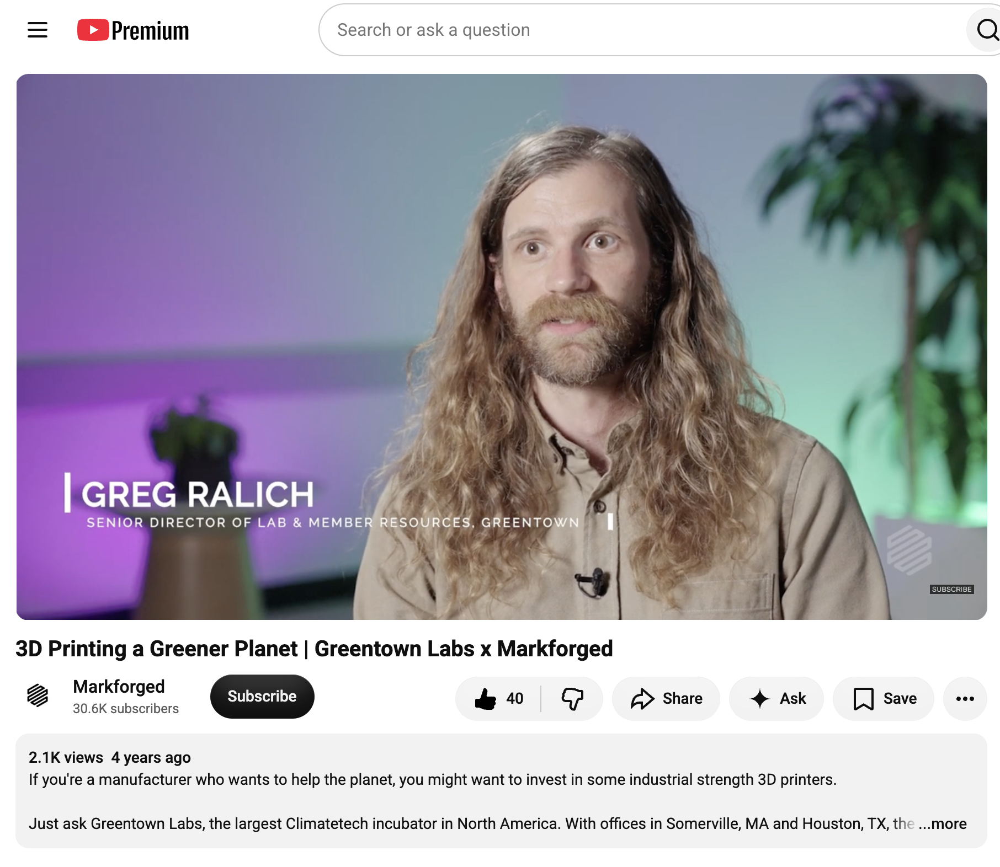
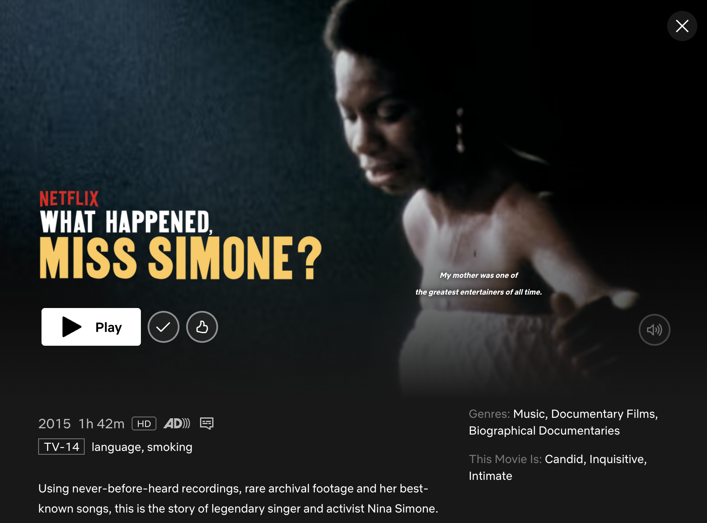
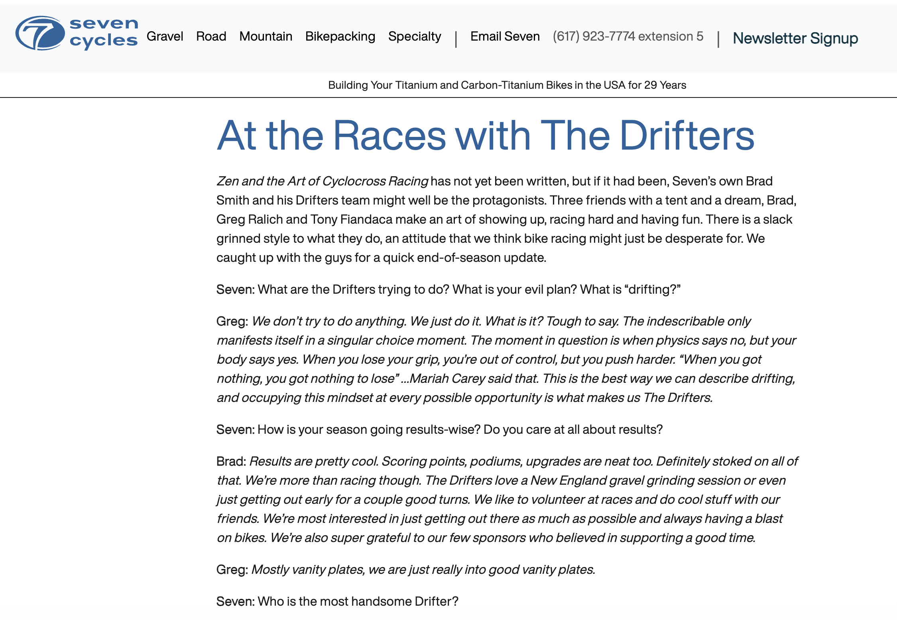
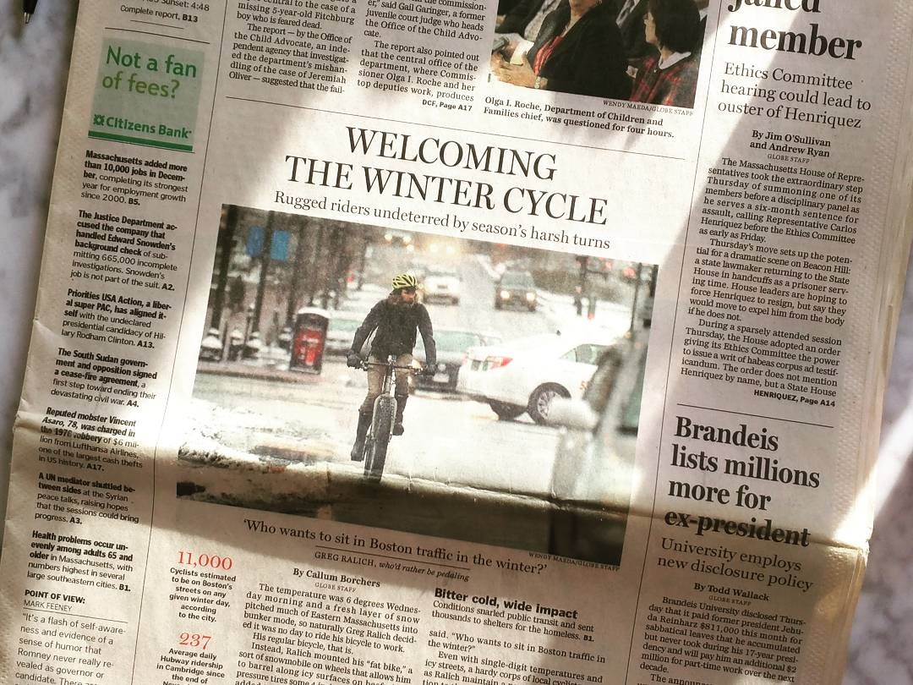
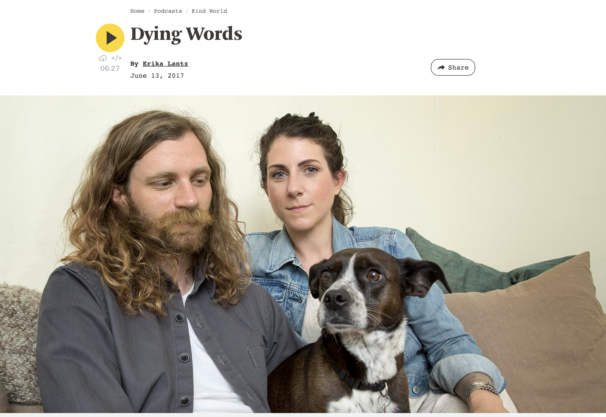
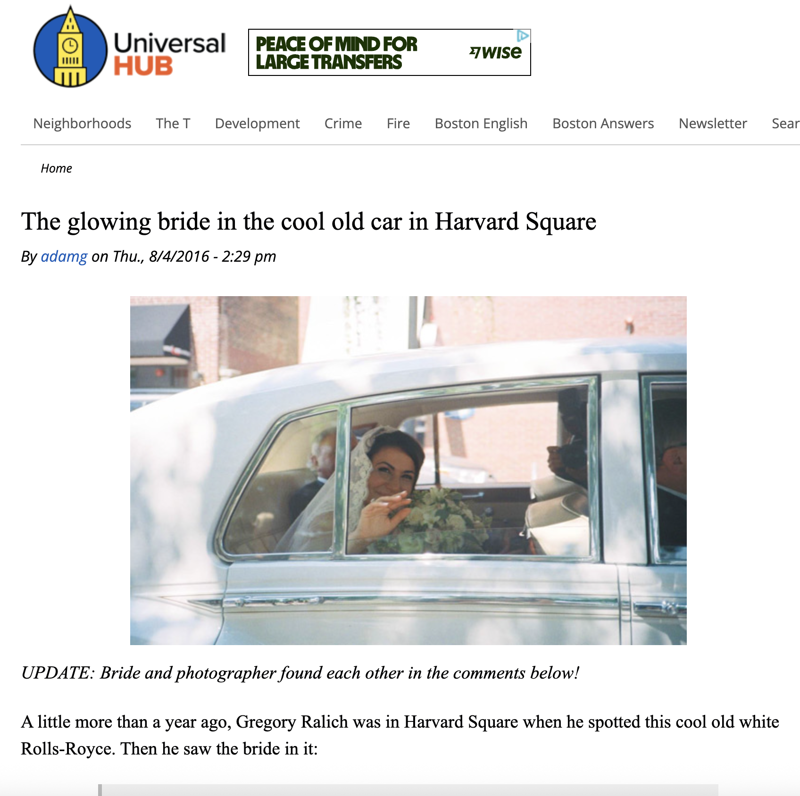
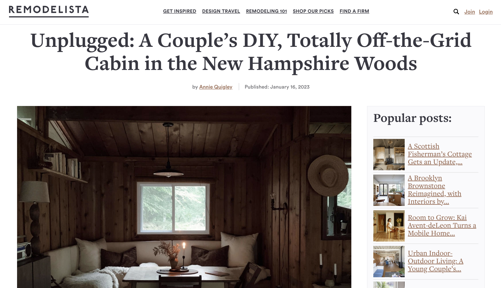
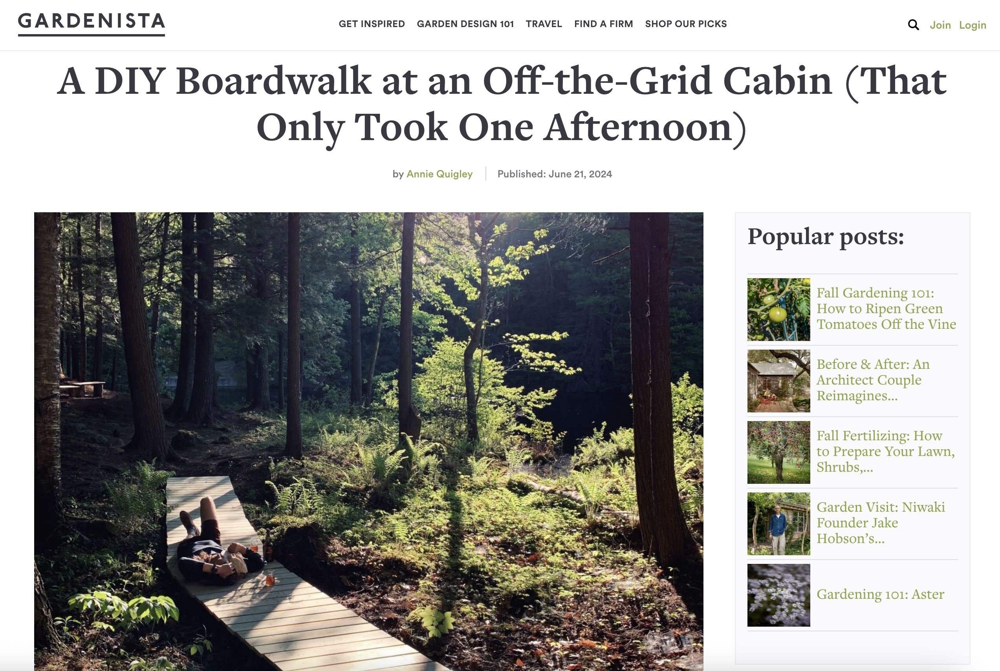
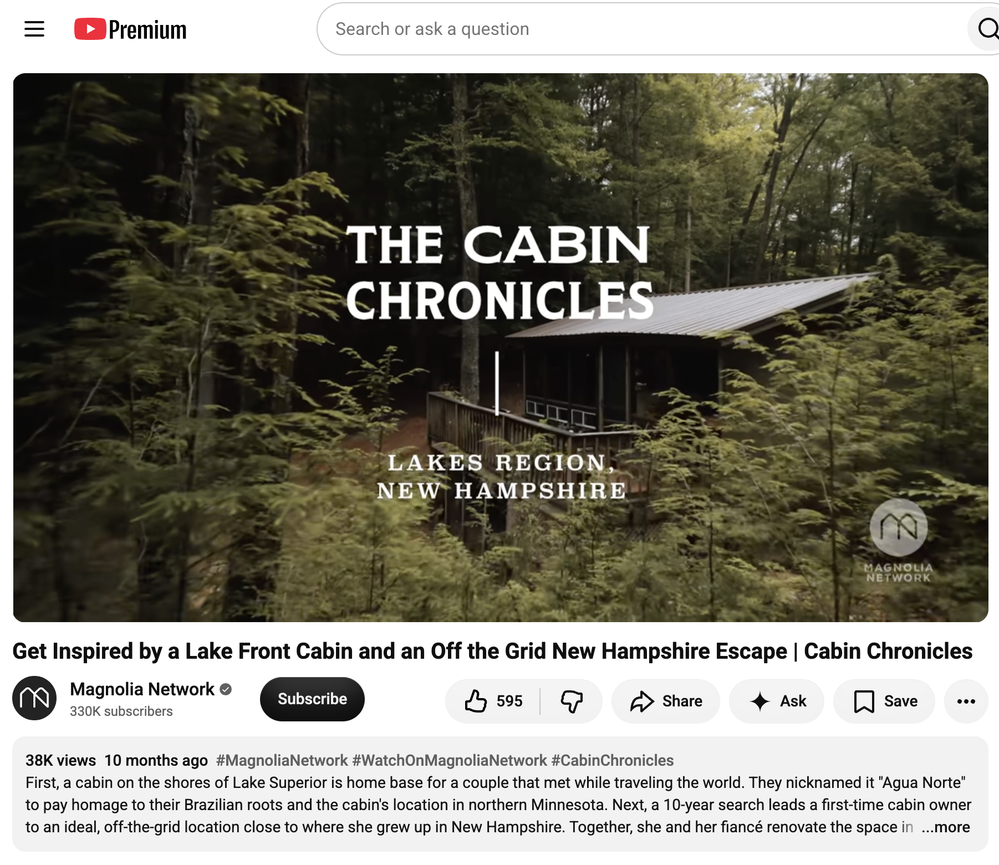

MARKFORGED · VIDEO
3D Printing a Greener Planet
A look at Greentown Labs, climate technology, and the role of 3D printing in prototyping.
Watch video ↗MA / NH
I'm all about making things work, fixing things that don't, riding bicycles, helping people, and getting excited about good ideas.
01
Bicycles.→ Old buildings. Useful machines. The outdoors. Making complicated things simpler. Helping people learn something new.
02

alt="Nina Simone documentary on Netflix">03
A few things I've been part of, appeared in, or helped bring into the world.

MARKFORGED · VIDEO
A look at Greentown Labs, climate technology, and the role of 3D printing in prototyping.
Watch video ↗
SEVEN CYCLES · 2014
A little bicycle racing history, community, and time spent on two wheels.
Read article ↗
THE BOSTON GLOBE
Riding bicycles through a New England winter and finding reasons to enjoy it.
Read article ↗
WBUR · PODCAST · 2017
A personal story featured on WBUR's Kind World podcast.
Listen ↗
UNIVERSAL HUB
An unusual wedding moment involving an old car in Harvard Square.
Read article ↗
REMODELISTA · 2020
Building and living with a simple, handmade cabin in the woods.
Read article ↗
GARDENISTA · 2020
A handmade boardwalk and some practical improvements around an off-grid cabin.
Read article ↗
MAGNOLIA NETWORK · VIDEO
A look inside the Forestbound cabin and the story behind the space.
Watch video ↗04
People I know and like: Alice Saunders – Forestbound + Keepsake Benedict McNamara + bendraws Aaron Panone –44rn Bob Shane – Shane Signs Caleb Mayerson+ F.B. Keene + Reframe Systems Mazdak Taghioskoui Ph.D. TraceMatters Gina Sapiro Bill Donahue Joel Kyaviro + Tumaini Cycling Academy People I don’t know personally but I still like what they’re up to: findaspring.com